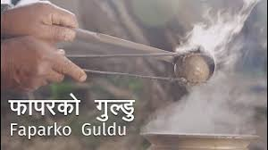

Fapark ko guldu Recipe

Ingredients:
- 2 cups buckwheat seeds
- Water for soaking
- Salt to taste
Procedures:
- Rinse the buckwheat seeds and soak them in water for at least 4 hours or overnight.
- Drain and rinse the buckwheat seeds again.
- Grind the buckwheat seeds into a fine flour using a grinder or blender.
- Mix the buckwheat flour with salt and water to form a dough.
- Knead the dough for 5-7 minutes until it becomes smooth and pliable.
- Divide the dough into small balls and flatten them slightly into disk shapes.
- Heat a non-stick pan or griddle over medium heat.
- Cook the Fapar ko Guldu for 2-3 minutes on each side, until they are golden brown and crispy.
- Serve hot with your favorite Nepali dishes!
Comments: